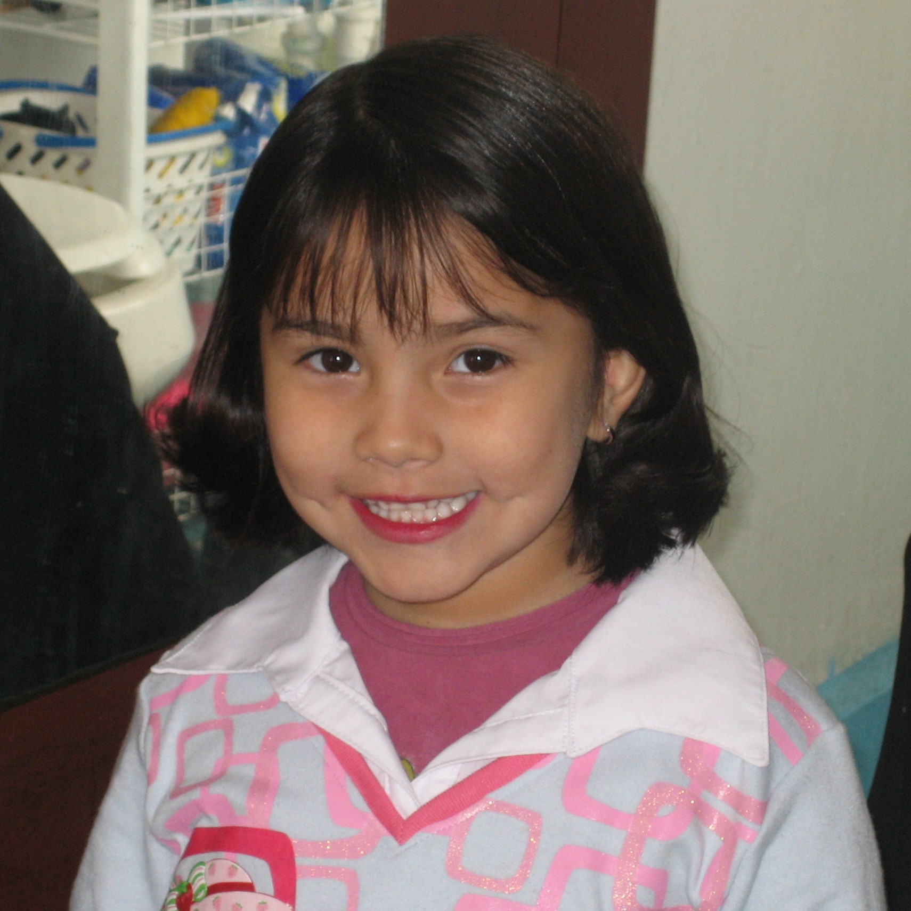

Mi nombre es Azul Carolina Martínez Cabañas, nací un Jueves 26 de Julio del año 2001 en San Nicolás de los Garza a las 00:47 con 36 segundos según mi papá.
Desde pequeña he sido una persona activa y extrovertida por lo que no me cuesta hacer amigos o acoplarme a situaciones no familiares. En mi tiempo libre disfruto de
escuchar mi música mientras salgo a caminar, practicar canto y una de mis actividades favoritas que es maquillarme.
Mi pasión se encuentra en los negocios desde que comencé a trabajar en ese ámbito al realizar tratados de patrocinio para el equipo de robótica al que pertenezco. Es por lo último
que en un futuro me gustaría desempeñarme en dicha rama, realizando alianzas estrátegicas entre empresas.
Jamás he salido del país por lo que hay cientos de lugares que me gustaría visitar, pero uno de los primeros en la lista es Seúl en Corea del Sur al ser este la sede de uno de mis géneros musicales favoritos, de igual manera porque me gustaría tener la experiencia de practicar el idioma fuera de un contexto educativo. Aparte de Seúl, me gustaría conocer Tokyo donde según lo que he visto, es una ciudad con muchísimo caracter donde puedes realizar infinidad de actividades desde jugar maquinas de garra como visitar hermosos parques.
Jamás he salido del país por lo que hay cientos de lugares que me gustaría visitar, pero uno de los primeros en la lista es Seúl en Corea del Sur al ser este la sede de uno de mis géneros musicales favoritos, de igual manera porque me gustaría tener la experiencia de practicar el idioma fuera de un contexto educativo. Aparte de Seúl, me gustaría conocer Tokyo donde según lo que he visto, es una ciudad con muchísimo caracter donde puedes realizar infinidad de actividades desde jugar maquinas de garra como visitar hermosos parques.
